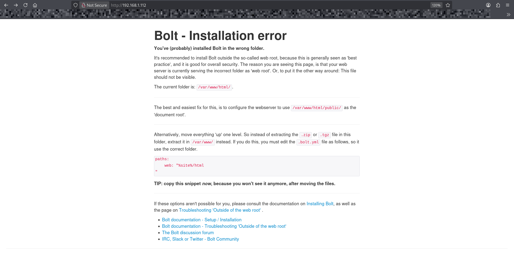
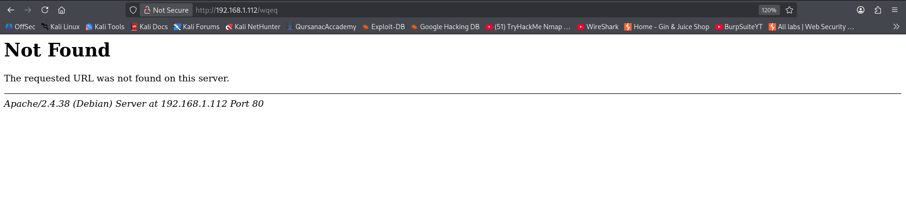

└─$ nmap -T4 -A -p- 192.168.1.112
Starting Nmap 7.98 ( https://nmap.org ) at 2026-03-23 12:54 -0400
Nmap scan report for 192.168.1.112 (192.168.1.112)
Host is up (0.0013s latency).
Not shown: 65526 closed tcp ports (reset)
PORT STATE SERVICE VERSION
22/tcp open ssh OpenSSH 7.9p1 Debian 10+deb10u2 (protocol 2.0)
| ssh-hostkey:
| 2048 bd:96:ec:08:2f:b1:ea:06:ca:fc:46:8a:7e:8a:e3:55 (RSA)
| 256 56:32:3b:9f:48:2d:e0:7e:1b:df:20:f8:03:60:56:5e (ECDSA)
|_ 256 95:dd:20:ee:6f:01:b6:e1:43:2e:3c:f4:38:03:5b:36 (ED25519)
80/tcp open http Apache httpd 2.4.38 ((Debian))
|_http-server-header: Apache/2.4.38 (Debian)
|_http-title: Bolt - Installation error
111/tcp open rpcbind 2-4 (RPC #100000)
| rpcinfo:
| program version port/proto service
| 100000 2,3,4 111/tcp rpcbind
| 100000 2,3,4 111/udp rpcbind
| 100000 3,4 111/tcp6 rpcbind
| 100000 3,4 111/udp6 rpcbind
| 100003 3 2049/udp nfs
| 100003 3 2049/udp6 nfs
| 100003 3,4 2049/tcp nfs
| 100003 3,4 2049/tcp6 nfs
| 100005 1,2,3 34509/tcp mountd
| 100005 1,2,3 47632/udp6 mountd
| 100005 1,2,3 54034/udp mountd
| 100005 1,2,3 57573/tcp6 mountd
| 100021 1,3,4 38107/tcp6 nlockmgr
| 100021 1,3,4 42155/tcp nlockmgr
| 100021 1,3,4 53654/udp6 nlockmgr
| 100021 1,3,4 59774/udp nlockmgr
| 100227 3 2049/tcp nfs_acl
| 100227 3 2049/tcp6 nfs_acl
| 100227 3 2049/udp nfs_acl
|_ 100227 3 2049/udp6 nfs_acl
2049/tcp open nfs 3-4 (RPC #100003)
8080/tcp open http Apache httpd 2.4.38 ((Debian))
| http-open-proxy: Potentially OPEN proxy.
|_Methods supported:CONNECTION
|_http-server-header: Apache/2.4.38 (Debian)
|_http-title: PHP 7.3.27-1~deb10u1 - phpinfo()
34509/tcp open mountd 1-3 (RPC #100005)
36263/tcp open mountd 1-3 (RPC #100005)
42155/tcp open nlockmgr 1-4 (RPC #100021)
42909/tcp open mountd 1-3 (RPC #100005)
MAC Address: 08:00:27:C5:EB:15 (Oracle VirtualBox virtual NIC)
Device type: general purpose|router
Running: Linux 4.X|5.X, MikroTik RouterOS 7.X
OS CPE: cpe:/o:linux:linux_kernel:4 cpe:/o:linux:linux_kernel:5 cpe:/o:mikrotik:routeros:7 cpe:/o:linux:linux_kernel:5.6.3
OS details: Linux 4.15 - 5.19, OpenWrt 21.02 (Linux 5.4), MikroTik RouterOS 7.2 - 7.5 (Linux 5.6.3)
Network Distance: 1 hop
Service Info: OS: Linux; CPE: cpe:/o:linux:linux_kernel
TRACEROUTE
HOP RTT ADDRESS
1 1.29 ms 192.168.1.112 (192.168.1.112)
OS and Service detection performed. Please report any incorrect results at https://nmap.org/submit/ .
Nmap done: 1 IP address (1 host up) scanned in 19.76 seconds
80/tcp open http Apache httpd 2.4.38 ((Debian))

Information discosure
